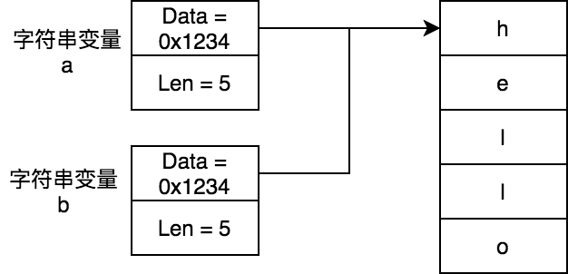
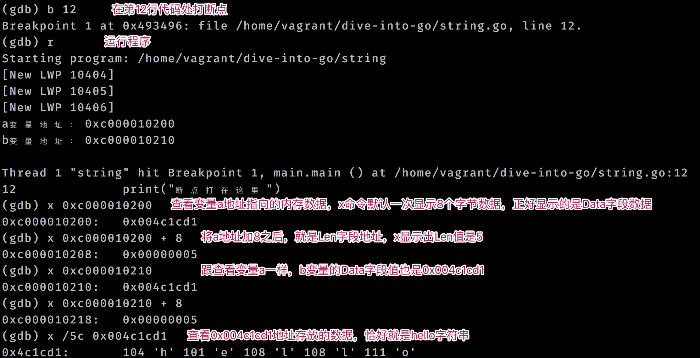
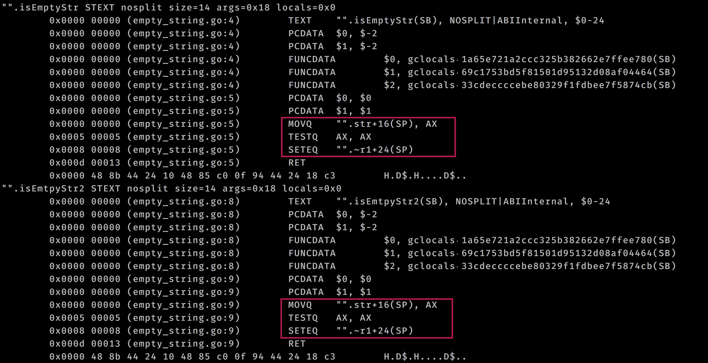

字符串
我們知道C語言中的字符串是使用字符數組 char[] 表示，字符數組的最後一位元素是 \0，用來標記字符串的結束。C語言中字符串的結構簡單，但獲取字符串長度時候，需要遍歷字符數組才能完成。
Go語言中字符串的底層結構中也包含了字符數組，該字符數組是完整的字符串內容，它不同於C語言，字符數組中沒有標記字符串結束的標記。爲了記錄底層字符數組的大小，Go語言使用了額外的一個長度字段來記錄該字符數組的大小，字符數組的大小也就是字符串的長度。
數據結構
Go語言字符串的底層數據結構是 reflect.StringHeader(reflect/value.go)，它包含了指向字節數組的指針，以及該指針指向的字符數組的大小：
type StringHeader struct {
Data uintptr
Len int
}
字符串複製
當將一個字符串變量賦值給另外一個變量時候，他們 StringHeader.Data 都指向同一個內存地址，不會發生字符串拷貝：
a := "hello"
b := a

從上圖中我們可以看到a變量和b變量的Data字段存儲的都是0x1234，而0x1234是字符數組的起始地址。
接來下我們藉助 GDB 工具來驗證Go語言中字符串數據結構是不是按照上面說的那樣。
package main
import (
"fmt"
)
func main() {
a := "hello"
b := a
fmt.Printf("a變量地址：%p\n", &a)
fmt.Printf("b變量地址：%p\n", &b)
print("斷點打在這裏")
}
將上面代碼構建二進制應用， 然後使用 GDB 調試一下：
go build -o string string.go # 構建二進制應用
gdb ./string # GDB調試
調試流程如下：

len(str) == 0 和 str == ""有區別嗎？
判斷一個字符串是否是空字符串，我們既可以使用len判斷其長度是0，也可以判斷其是否等於空字符串 ""。那麼它們有什麼區別嗎？這個問題的答案是二者沒有區別。因爲他們底層實現是一樣的。
讓我們來探究一下。源代碼如下：
package main
func isEmptyStr(str string) bool {
return len(str) == 0
}
func isEmtpyStr2(str string) bool {
return str == ""
}
func main() {
}
接下來我們來查看下上面代碼的底層彙編：
go tool compile -S empty_string.go # 查看底層彙編代碼
從下圖中，我們可以發現兩種方式的實現是一樣的：

警告 注意：
當我們編譯時候開啓了禁止內聯，禁止優化時候，可以發現len(str) == 0和str == ""的實現是不同的，前者的執行效率是不如後者的。在默認情況下，Go編譯器是開啓了優化選項的，len(str) == 0會優化成跟str == ""的實現一樣。
[3]string類型的變量佔用多大空間？
對於這個問題，直覺上覺得[3]string類型變量，由3個字符串組成，而字符串長度是不確定的，所以對於類似[n]string類型變量佔用多大的空間是不確定。
首先明確的是Go語言中提供了 unsafe.Sizeof 函數來確定一個類型變量佔用空間大小，這個大小是不含它引用的內存大小。比如某結構體中一個字段是個指針類型，這個字段指向的內存是不計算進去的，只會計算該字段本身的大小。
字符串底層結構是 reflect.StringHeader ，一共佔用16個字節空間，所以我們對於[n]string的大小，計算僞代碼如下：
unsafe.Sizeof([n]string) == n * 16
那麼問題[3]string類型的變量佔用多大空間？的答案是48。
如何高效的進行字符串拼接？
字符串進行拼接有多種方法：
-
使用拼接字符
+拼接字符串效率低，每次拼接會產生臨時字符串，適合少量字符串拼接。使用起來最簡單。
-
使用
fmt.Printf()來拼接字符由於需要將字符串轉換成空接口類型，效率差，這裏面不再討論
-
使用
strings.Join()來拼接字符串其底層其實使用的是
strings.Builder，效率高，適合字符串數組。 -
使用
bytes.Buffer來拼接字符串效率高，可以複用
-
使用
strings.Builder來拼接字符串效率高，每次Reset()之後，其底層緩衝會被清除，不適合複用。
使用拼接符 + 進行拼接
package main
import (
"fmt"
"reflect"
"unsafe"
)
func main() {
strSlices := []string{"h", "e", "l", "l", "o"}
var all string
for _, str := range strSlices {
all += str
sh := (*reflect.StringHeader)(unsafe.Pointer(&all))
fmt.Printf("str地址：%p，all地址：%p，all底層字節數組地址=0x%x\n", &str, &all, sh.Data)
}
}
上面代碼輸出一下內容：
str地址：0xc000010250，all地址：0xc000010240，all底層字節數組地址=0x4bc8f7
str地址：0xc000010250，all地址：0xc000010240，all底層字節數組地址=0xc000018048
str地址：0xc000010250，all地址：0xc000010240，all底層字節數組地址=0xc000018068
str地址：0xc000010250，all地址：0xc000010240，all底層字節數組地址=0xc000018078
str地址：0xc000010250，all地址：0xc000010240，all底層字節數組地址=0xc000018088
從上面輸出中可以發現str和all地址一直沒有變，但是all的底層字節數組地址一直在變化，這說明拼接符 + 在拼接字符串時候，會創建許多臨時字符串，臨時字符串意味着內存分配，指向效率不會太高。
使用 bytes.Buffer 拼接字符串
package main
import "bytes"
func main() {
strSlices := []string{"h", "e", "l", "l", "o"}
var bf bytes.Buffer
for _, str := range strSlices {
bf.WriteString(str)
}
print(bf.String())
}
bytes.Buffer 底層結構包含內存緩衝，最少緩衝大小是64個字節，當進行字符串拼接時候，由於利用到了緩衝，拼接效率相比拼接符 + 大大提升：
type Buffer struct {
buf []byte // 內存緩衝是字節切片類型
off int // buf已讀索引，下次讀取從buf[off]開始
lastRead readOp
}
func (b *Buffer) String() string {
if b == nil {
// Special case, useful in debugging.
return "<nil>"
}
return string(b.buf[b.off:])
}
警告 注意：
bytes.Buffer是可以複用的。當進行reset時候，並不會銷燬內存緩衝。
使用 strings.Builder 拼接字符串
package main
import "strings"
func main() {
strSlices := []string{"h", "e", "l", "l", "o"}
var strb strings.Builder
for _, str := range strSlices {
strb.WriteString(str)
}
print(strb.String())
}
strings.Builder 同 bytes.Buffer 一樣都是用內存緩衝，最大限度地減少了內存複製：
type Builder struct {
addr *Builder // 用來運行時檢測是否違背nocopy機制
buf []byte // 內存緩衝，類型是字節數組
}
func (b *Builder) String() string {
return *(*string)(unsafe.Pointer(&b.buf))
}
從上面可以看到 string.Builder 的 String 方法使用 unsafe.Pointer 將字節數組轉換成字符串。而bytes.Buffer的 String 方法使用的 string([]byte)將字節數組轉換成字符串，後者由於涉及內存分配和拷貝，相比之下它的執行效率低。
爲什麼bytes.Buffer的 String 方法的效率比較低，可以查看《基礎篇-切片-string類型與[]byte類型如何實現zero-copy互相轉換？》。
字符串拼接基準測試
下面我們進行基準測試下：
// 使用拼接符拼接字符串
func BenchmarkJoinStringUsePlus(b *testing.B) {
strSlices := []string{"h", "e", "l", "l", "o"}
for i := 0; i < b.N; i++ {
for j := 0; j < 10000; j++ {
var all string
for _, str := range strSlices {
all += str
}
_ = all
}
}
}
// 複用bytes.Buffer結構
func BenchmarkJoinStringUseBytesBufWithReuse(b *testing.B) {
strSlices := []string{"h", "e", "l", "l", "o"}
var bf bytes.Buffer
for i := 0; i < b.N; i++ {
for j := 0; j < 10000; j++ {
var all string
for _, str := range strSlices {
bf.WriteString(str)
}
all = bf.String()
_ = all
bf.Reset()
}
}
}
// 使用bytes.Buffer，未進行復用
func BenchmarkJoinStringUseBytesBufWithoutReuse(b *testing.B) {
strSlices := []string{"h", "e", "l", "l", "o"}
for i := 0; i < b.N; i++ {
for j := 0; j < 10000; j++ {
var all string
var bf bytes.Buffer
for _, str := range strSlices {
bf.WriteString(str)
}
all = bf.String()
_ = all
bf.Reset()
}
}
}
// 使用strings.Builder
func BenchmarkJoinStringUseStringBuilder(b *testing.B) {
strSlices := []string{"h", "e", "l", "l", "o"}
for i := 0; i < b.N; i++ {
for j := 0; j < 10000; j++ {
all := ""
var strb strings.Builder
for _, str := range strSlices {
strb.WriteString(str)
}
all = strb.String()
_ = all
strb.Reset()
}
}
}
基準測試結果如下：
BenchmarkJoinStringUsePlus 703 1633439 ns/op 160000 B/op 40000 allocs/op
BenchmarkJoinStringUseBytesBufWithReuse 2130 471368 ns/op 0 B/op 0 allocs/op
BenchmarkJoinStringUseBytesBufWithoutReuse 1209 883053 ns/op 640000 B/op 10000 allocs/op
BenchmarkJoinStringUseStringBuilder 1830 548350 ns/op 80000 B/op 10000 allocs/op
字符串拼接效率總結
從上面結果可以分析得到字符串拼接效率，其中strings.Builder的效率最高，拼接字符+效率最低：
strings.Builder > bytes.Buffer > 拼接字符+
但是由於bytes.Buffer可以複用，若在需要多此執行字符串拼接的場景下，推薦使用它。